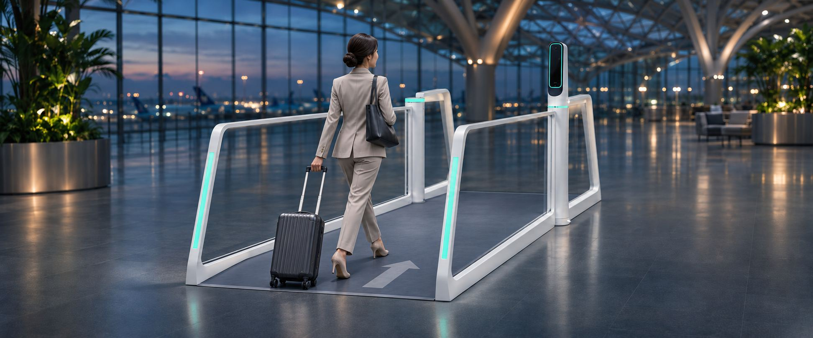
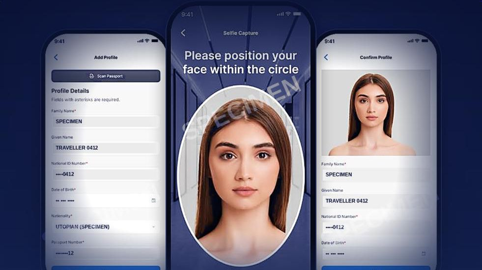
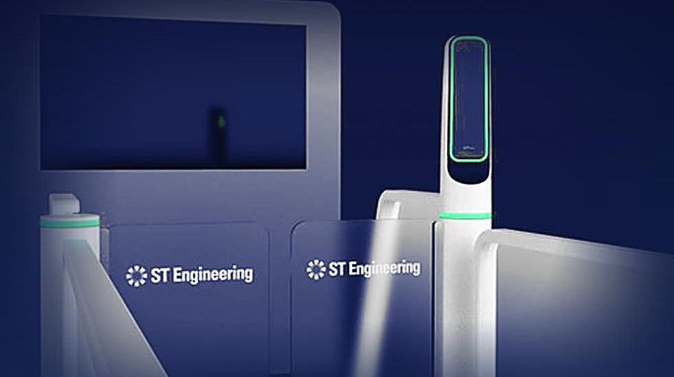
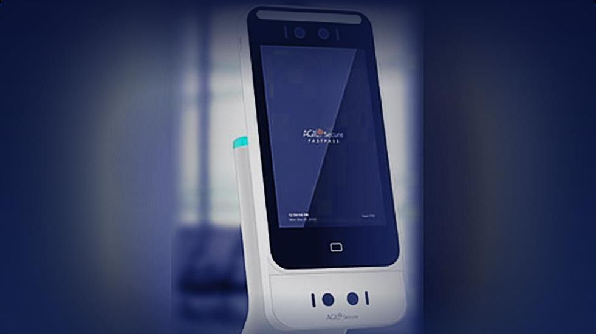

Smart · Secure · Seamless airport journeys
One verified identity.
A journey designed to keep moving.
AGIL® Secure FastPass is a mobile-first, biometric solution designed to deliver fast, contactless and secure airport journeys from kerb to gate.
- Built on trusted, proven security technologies
- Fully integrated, end-to-end digital airport experience
- Speed and convenience while maintaining robust security
FastPass biometric lane · concept visualisation
The aviation challenge
More passengers. More checks. Limited capacity.
Air travel demand is accelerating, placing new pressure on airport security and operations. Airport and airline operators must balance speed, capacity and security while countering new risks from digitalisation and rising passenger volumes.
- 1Check-in✋
- 2Immigration✋
- 3Security screening✋
- 4Boarding gate✋
≥4
officers or staff members per workflow
2×
air travel demand by 2040
7/10
airline operators expect to adopt biometric systems by 2026
Repeat ID checks
Show documents again at every stop.
System silos
Separate platforms that don't talk to each other.
More waiting
Every stop creates a queue.
Limited visibility
No shared view of the journey.
Sources: IATA Global Outlook for Air Transport (Dec 2023); SITA Air Transport IT Insights 2024 & 2025.
FastPass solution · kerb to gate
One identity, from kerb to gate
Six touchpoints. One verified credential. No stops for eligible travellers at participating checkpoints.
Illustrative terminal layout. The flow shows participating, configured checkpoints for eligible travellers; policy checks and officer intervention remain part of the process.
Interactive demo
Walk the journey as a traveller
Tap through the FastPass Mobile App: enrol once at home, then keep walking. The phone carries the credential; the lanes and kiosks match your live face against it.
Demo only. All data shown is specimen data. Nothing is captured, uploaded or stored — no camera is used.
AI & security operations
One command environment unifies every FastPass touchpoint
The AGIL® Secure Platform (ISMP) is the operational backbone of FastPass: traveller transactions, lane & gate control, video analytics, exception management and a 3D operational view — in one command layer. Officers act on exceptions, not routine.
Cleared today
0
Avg. lane time
—
Open exceptions
0
Lanes online
4 / 4
Passenger log
| Time | Traveller | Location | Status |
|---|
Lane status
Exceptions
- No open exceptions.
Traveller flow · cleared per interval (simulated)
How FastPass becomes smarter every day
The AI Security Engine runs a continuous learning loop. It recommends; officers decide.
01 · Report
Spot the risk
A traveller is still in the dining zone, 22 min from Gate B12, and boarding starts in 15 min. Missed boarding risk is flagged.
02 · Recommend
Suggest the SOP
Passenger-assistance procedure: send a boarding reminder, suggest the fastest route, notify gate staff, offer the FastPass priority lane.
03 · React
Act in seconds
Mobile notification sent, nearby display updated, localised PA activated and gate staff alerted — the traveller boards on time.
04 · Predict
Get ahead of queues
High congestion predicted at security: expected queue time rising from 8 to 22 min within 15 min. Recommended action: open another lane.
Illustrative scenarios. AI-assisted outputs are recommendations for operators to review.
Kerb-to-gate digitalisation
All components, seamlessly integrated
Built to support whole-of-airport operations. Pilot one lane, then add checkpoints.

01 · Enrol
FastPass Mobile App
Traveller enrolment and digital identity. Passport scan and selfie, once — encrypted on the phone.

02 · Walk through
FastPass Biometric E-Gate
BLE lane pairing on approach and on-the-move face matching for immigration clearance.

03 · Pre-screen
FastPass Nova Plus Reader
Pre-screening profile check: confirms identity before the X-ray.
04 · Board
FastPass Smart Boarding Kiosk
Automated facial-recognition boarding. Face plus phone clears boarding — no documents to show.
Value proposition
One verified credential enables a smoother, safer journey at scale.
20–30% less time from kerb to gate (pitch team target, to be validated in pilot)
Trusted by design
Credentials remain encrypted on the traveller's device.
Connected ecosystem
Clearance events can be linked with video, access control and incident information.
Easy to adopt
An SDK supports integration with existing airline and airport applications.
AI-assisted decisions
AI-assisted verification helps operators focus their attention and review recommended actions.
For travellers
- Faster, frictionless, passport-free journey
- Consistent security from check-in to boarding
- Reduced waiting time and a contactless experience
For airports & operators
- Increased throughput without added manpower
- Reduced human error through automation and AI
- Unified monitoring, analytics and faster incident response
- Scalable, infrastructure-light and future-ready platform
Market potential
A focused market in high-growth airport regions
Brownfield airports in the Middle East and Southeast Asia, where growth outpaces capacity.
Estimated FastPass SOM · 2026–2030
US$50–75M
≈ US$10–15M a year on average, from hardware to recurring software and services.
~78%
of regional airport projects are brownfield.
Pilot focus: congested hubs where airports, hub airlines and agencies can align.
Global forecast (US$5.03B in 2030, from US$2.56B in 2025, ~14.4% CAGR) and 2025 airport share (83.1%) from MarketsandMarkets, Automated Border Control Market 2025–2030; both rounded here. Regional share, target capture, brownfield share and SOM are pitch team estimates.
Business plan
Start where the airport decides. Prove it. Repeat.
Start with one lane. Scale to an airport. Hardware once, software every year.
2027 · Prove
Airport LOI (Q1); lane live (Q2)
Airport touchpoints first; the agency co-designs its border step.
2028 · Convert
First paid order (Q4)
Proof of concept, then tender; the agency decides on its step.
2029–30 · Expand
More airports
Platform licence; one strong reference travels.
2031 · Scale
~5 airports, ~100 lanes (target)
One product core; seaports and land borders next.
How it's sold
Pilot
1 lane, 1 traveller group
Terminal
More lanes + platform licence
Airport
Every touchpoint, one platform
Portfolio
More airports, one product core
One-off: hardware + installation. Yearly: software licence + support. Option: a fee per traveller. Roadmap dates are targets.
Work with us
Start with one lane.
We're shortlisting congested hubs where the airport, hub airline and border agency can align on a co-designed pilot.
- Reputation 35+ years of secure delivery
- Geography Singapore, with global reach
- Domain AGIL® Secure, borders
- Networks Airports and agencies